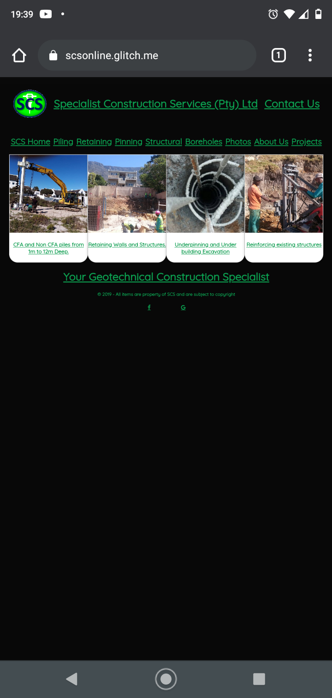
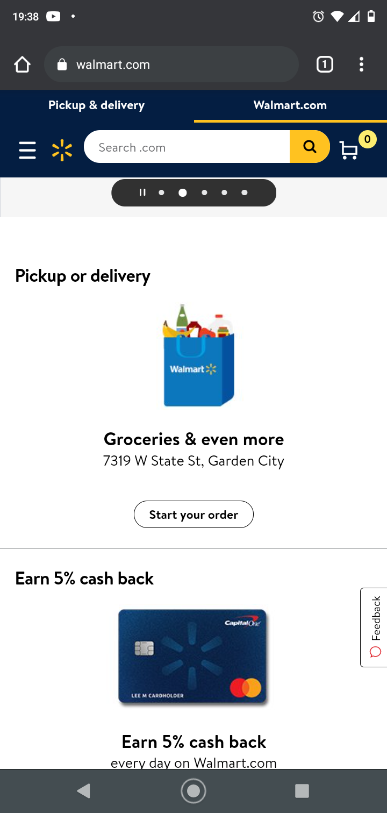

Rule of Thirds
SCSONLINE - SCC
scsonline.net
In this example, you can see how tried to create a scalable vizual and how it seems to loose its effect on mobilde devices.
PARC: Alignment
Century Link
Centurylink.com
Here you can see the alignment of the Centurylink website. As the viewer scrolls down, you can see the sections are perfectly aligned and seperated for the user to select and also gives the site a clean organized well designed look.
White Space and Clean Design
Walmart Grocery
Walmart.com/grocery
Walmart creates a clean and focus based site and the Whitespace helps focus attention on specific items.